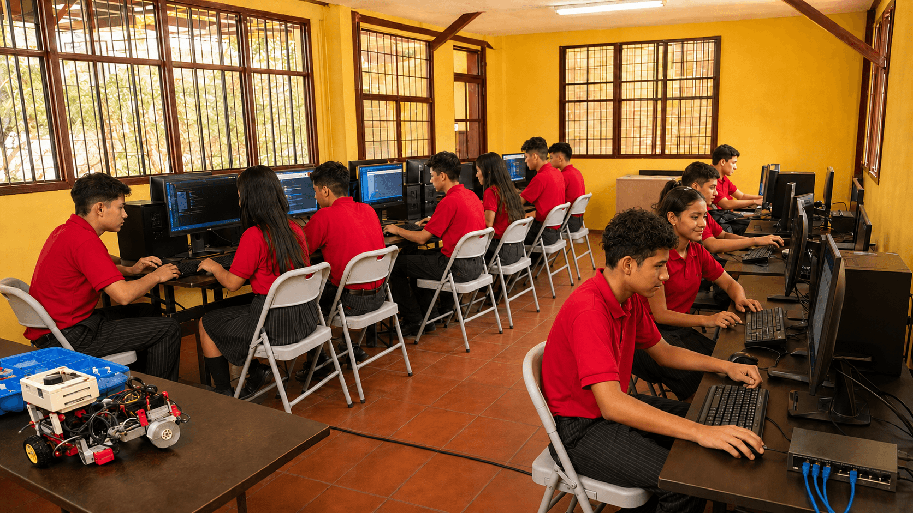

Carrera técnica
Bachillerato Técnico Profesional en Informática
Forma estudiantes capaces de desarrollar programas, páginas web, bases de datos, redes y mantenimiento de computadoras.
Duración
3 años
Jornada
Vespertina
Niveles
Décimo, undécimo y duodécimo
Asignaturas principales
- Programación
- Diseño web
- Redes informáticas
- Mantenimiento y reparación
- Producciones digitales
- Analisis y Diseño de Sistemas
Competencias y campo laboral
El egresado podrá trabajar en soporte técnico, desarrollo web, mantenimiento, diseño digital, digitación y administración básica de redes.
Solicitar información